| 日付 | 2019年3月17日（日） |
|---|---|
| 山域 | 安蘇山塊 |
| メンバー | 家族（妻、長女・8歳、長男・5歳） |
| 山行形態 | 子連れ日帰り |
| アクセス | 車 |
| ルート (Map) | 露垂根神社 (8:05) - (8:43) 唐沢山神社 (8:58) - (10:07) 京路戸峠 - (10:28) 諏訪岳 (11:12) - (12:42) 唐沢山神社 - (13:13) 露垂根神社 |
先週に引き続き本日も不安定な天候。
雨に降られるリスクの少なそうな栃木の低山に行くことにする。
露垂根神社前の駐車場に車を停める。標高50m。
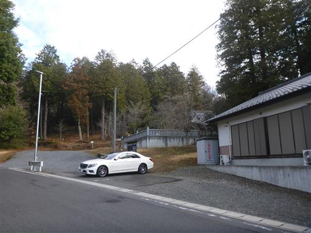
まずは露垂根神社に参拝してから登山を開始することにする。
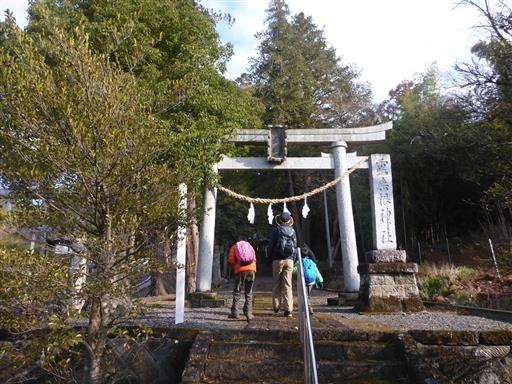
拝殿。境内はきれいに整備されている。
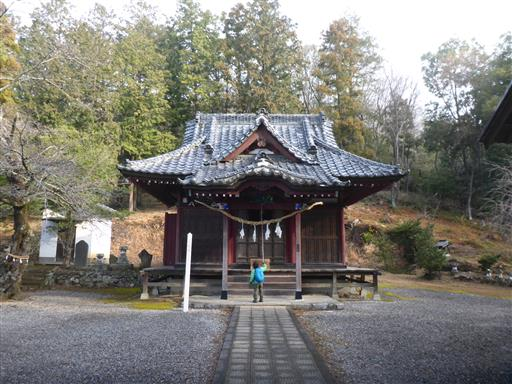
神社の側から登山道は始まる。緩やかな尾根道だ。
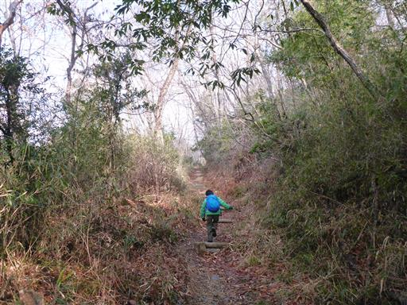
足元にスミレの花が咲いている。
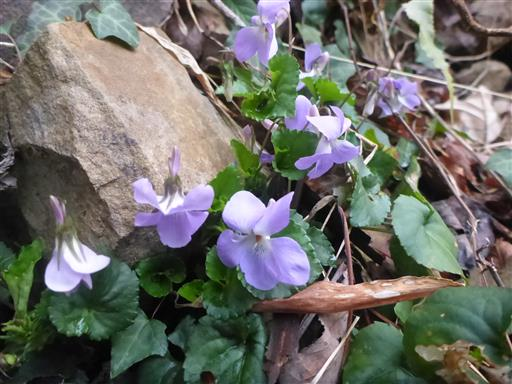
一登りで唐沢山神社の境内に辿り着く。
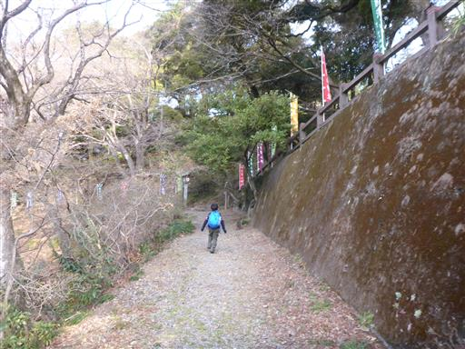
付近は猫が多い。人が近づいても逃げず、みな丸々と太っている。
参拝客に餌をもらい慣れているのだろう。
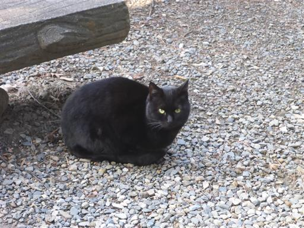
大きな木が倒れていて、木の根によって階段が破壊されている。
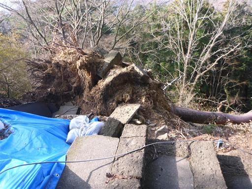
社務所で交通安全の御守りを購入。
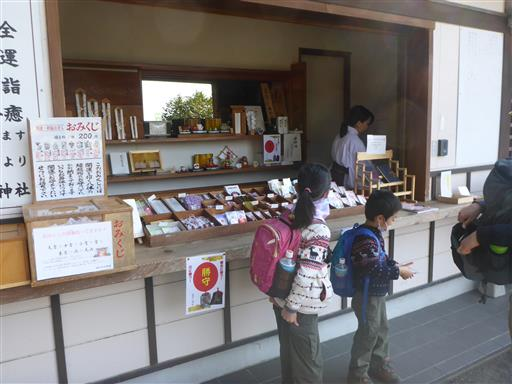
展望台からは関東平野を一望できる。
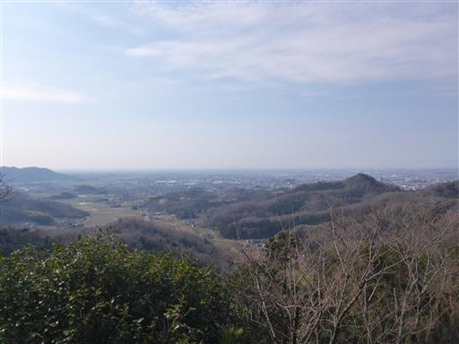
こちらは浅間山。
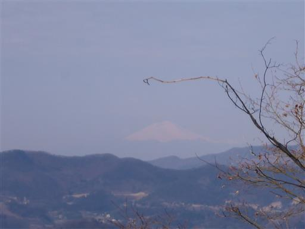
社務所から急な階段を登った先が本殿だ。
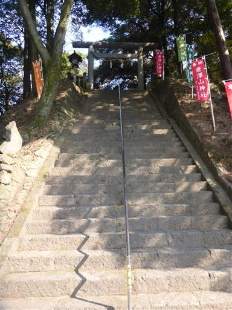
唐沢山神社本殿。思った以上に立派な神社だ。
車で来れる場所とはいえ、朝早くから参拝客がいるのは驚きだ。
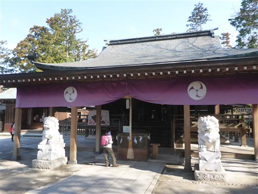
早速お参り。

建物が奥に続いている。境内は広い。
この神社はかつて山城だったそうで、この場所に本丸があったようだ。
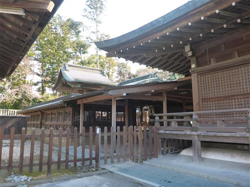
ここの狛犬は口に玉をくわえている。触るとコロコロ転がる。
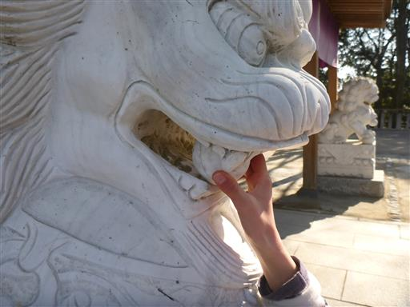
参拝を済ませたら、唐沢山神社から京路戸峠に向かう道を歩く。
この辺りはちょっと杉が多い。
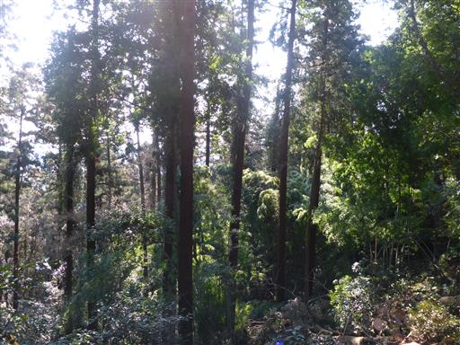
車井戸。
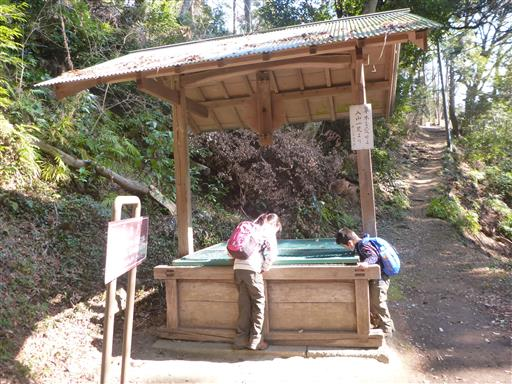
案内板によると深さ25mもあるらしい。底が全く見えない。
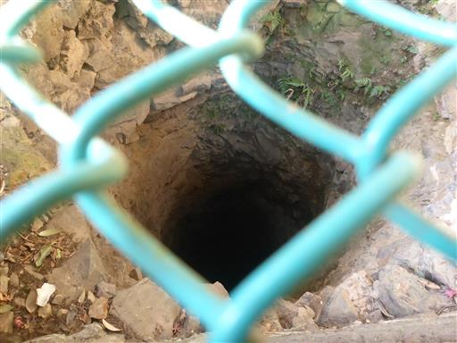
アップダウンが続く気持ちの良い道。
標高はほとんど変わらずで長い登り下りは存在しない。
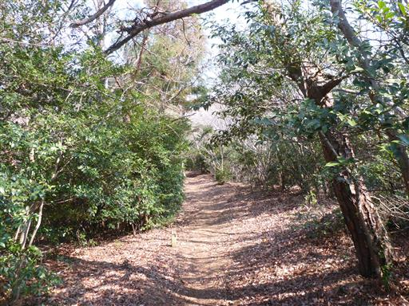
途中で何度か林道と交差する。
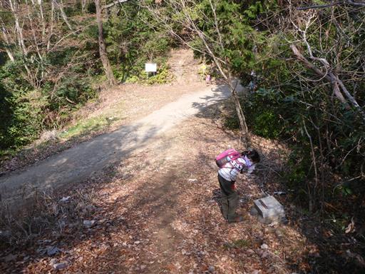
見晴休息所に到着。名前とは裏腹に全く展望は広がらない。
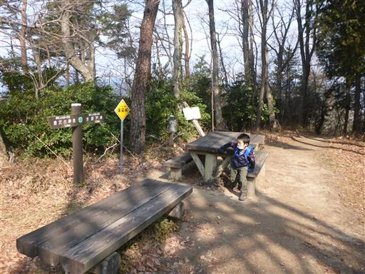
アップダウンが少ないとはいえ、傾斜はそこそこ急なところが多い。
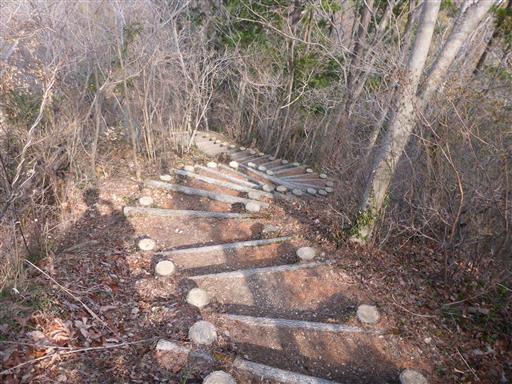
京路戸峠を指す標識はあちらこちらにある。
しかし諏訪岳の文字はほとんど見当たらない。
関東ふれあいの道が諏訪岳を通ってないからと思われるが、少々不親切だ。
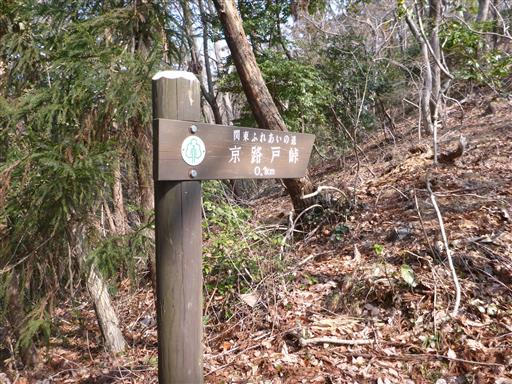
京路戸峠に到着。あれほどこの地を示す標識があったのに、
ここが京路戸峠であることを示す標識は見当たらない…
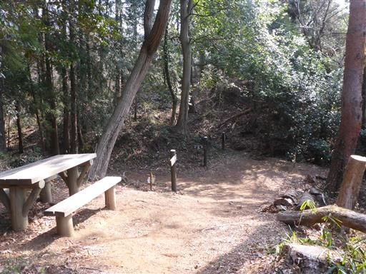
ここから諏訪岳まであと少し。この辺りはかなり痩せ尾根だ。
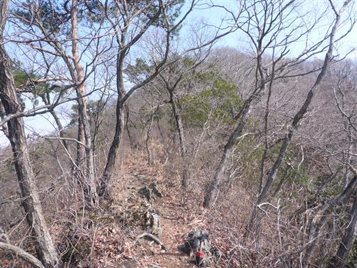
遠くに日光男体山が見える。一際目立つ立派な山だ。

西方の展望も広がる。低い山々が幾重にも連なっている。
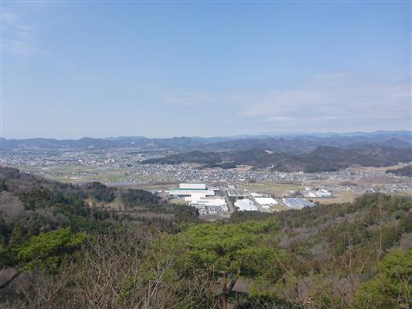
最後に急斜面を登りきると諏訪岳に到着する。標高324m。
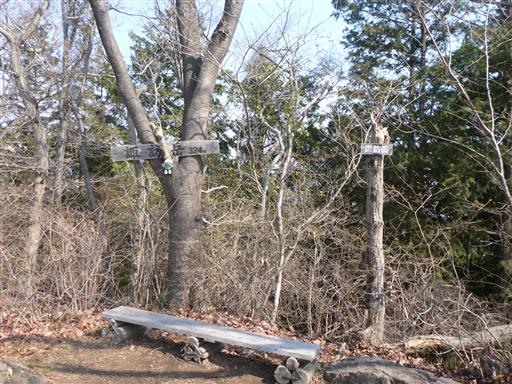
山頂はあまり広くない。石が積まれているが昔は祠があったのだろうか？
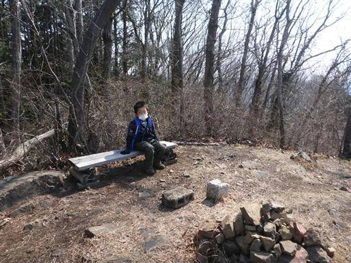
一角のみ展望が広がる。息子は双眼鏡を覗いている。
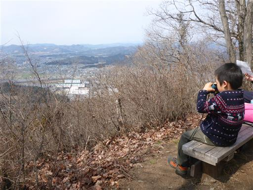
下山はロープに捕まりながら慎重に下る。
息子はこういう場所を歩くのがなかなか上手くならない。

歩いてきた尾根道が見渡せる。
本日は往復登山なので、登りと同じ距離を歩かなければならない。
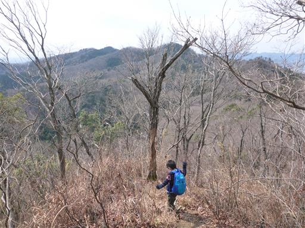
唐沢山神社付近にトチの実が大量に落ちている。
3裂していて中からきれいな実が出てくる。
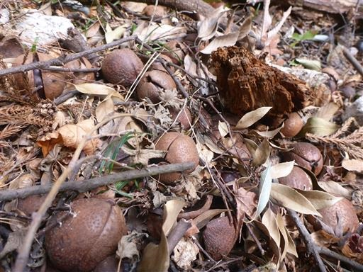
唐沢山神社に戻ってくる。猫と少し戯れたら下山する。
あまり天気は良くなかったが雨に降られることもなく、
低山歩きを楽しむことができた。
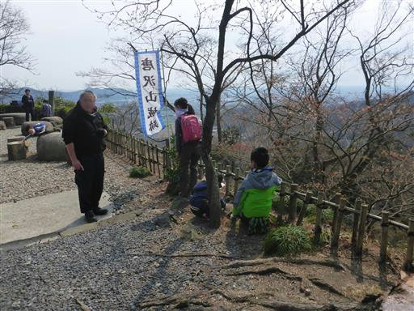